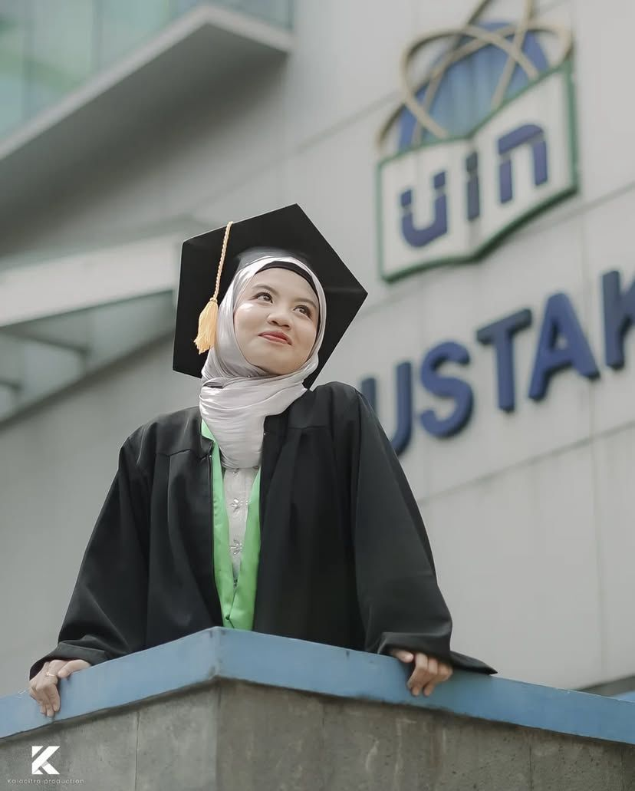

tentang kami
Kalacitra berawal dari komunitas fotografi mahasiswa di Universitas Islam Negeri (UIN) Syarif Hidayatullah Jakarta yang berdiri sejak tahun 2000 dengan nama Komunitas Mahasiswa Fotografi (KMF) Kalacitra. Komunitas ini lahir dari semangat para mahasiswa yang ingin mewadahi dan mengembangkan minat di bidang fotografi secara independen di lingkungan kampus. Seiring waktu, Kalacitra tumbuh menjadi wadah kreatif yang aktif menggelar pameran, pelatihan, dan berbagai kegiatan fotografi mahasiswa. Melalui berbagai generasi, semangat dokumentasi dan karya visual terus dijaga agar fotografi tetap menjadi ruang ekspresi yang hidup di kalangan mahasiswa. Hingga kini, Kalacitra dikenal sebagai salah satu UKM kampus yang konsisten berkontribusi dalam dunia seni visual dan dokumentasi.
Memasuki tahun 2021, semangat dan kreativitas itu berkembang menjadi Kalacitra Production sebuah studio foto yang lahir dari akar komunitas kampus dan kini bergerak secara profesional. Kami hadir untuk menangkap setiap momen berharga dan menjadikannya karya visual yang bermakna. Bagi kami, setiap foto bukan sekadar hasil jepretan kamera, tetapi kisah yang hidup dan penuh emosi. Dengan pengalaman panjang di dunia fotografi, Kalacitra Production berkomitmen memberikan pelayanan terbaik, mengedepankan kenyamanan klien, serta menjaga kualitas hasil foto di setiap sesi pemotretan.
Kalacitra Production menyediakan berbagai layanan fotografi seperti foto wisuda indoor, foto wisuda outdoor, foto produk, hingga dokumentasi acara profesional. Kami juga terbuka untuk kolaborasi bersama individu, komunitas, maupun lembaga yang memiliki visi kreatif serupa. Dengan semangat “Dari Mahasiswa, Untuk Mahasiswa”, kami terus berupaya memberikan pengalaman fotografi yang hangat, profesional, dan terjangkau. Menghadirkan karya visual yang bukan hanya indah dipandang, tapi juga berkesan di hati. Kami percaya bahwa setiap momen layak diabadikan dengan sepenuh hati, karena dari satu foto bisa lahir sejuta kenangan dan cerita.
layanan kami

foto wisuda indoor
Studio dengan pencahayaan profesional yang dirancang untuk hasil foto wisuda yang elegan dan berkelas.

foto dokumentasi
Abadikan setiap momen penting dalam acara dengan hasil foto yang jernih dan emosional.

foto wisuda outdoor
Konsep alami dan santai di luar ruangan untuk hasil foto yang cerah dan penuh kenangan.

foto produk
Menonjolkan keunikan produkmu dengan pencahayaan dan komposisi profesional.